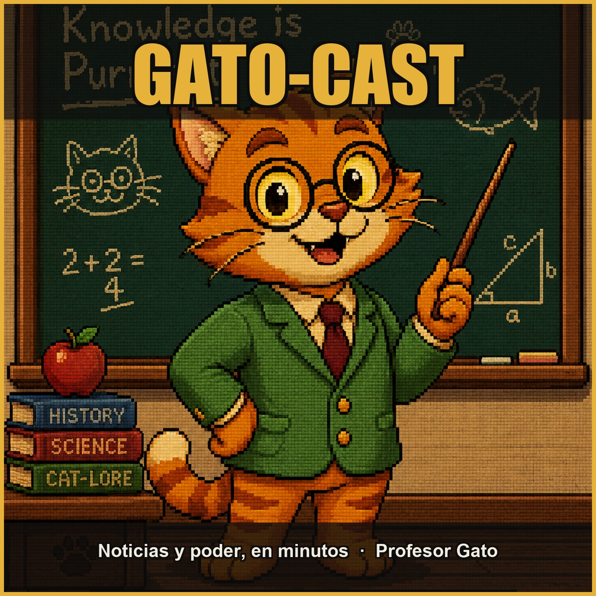

El GATO-CAST es el podcast del Profesor Gato: análisis claros y apartidistas de las noticias que mueven a América Latina y al mundo. Economía, política y poder explicados en minutos, con datos verificados. Nuevos episodios cuando la actualidad lo pide.
Feed RSS: feed.xml